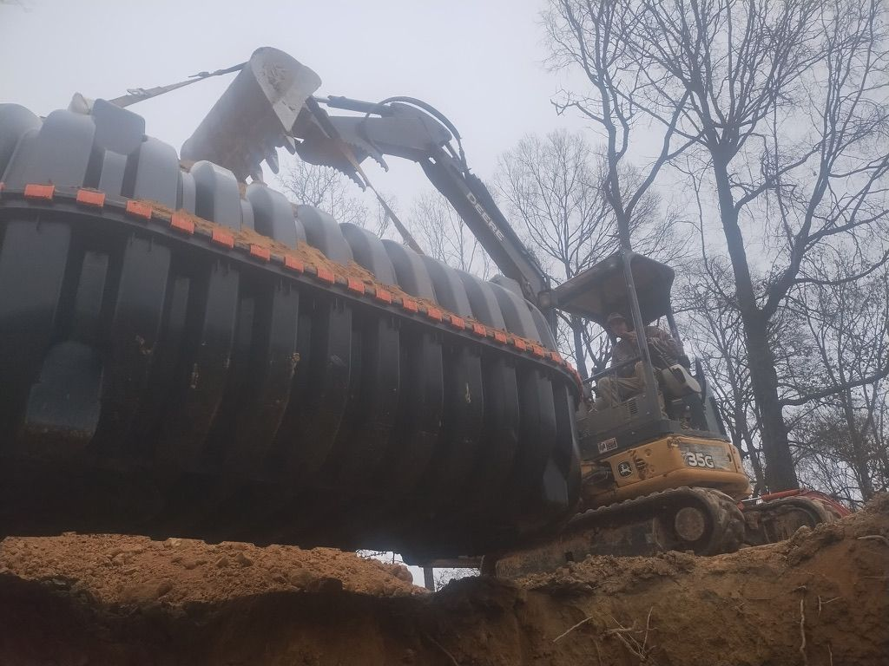

Midland, NC properties have a particular combination of rural land, varying soil types, and aging infrastructure that creates some of the most common drainage problems we see in Cabarrus County. Standing water near driveways, blocked or undersized culvert pipes, eroding field entrances, and soggy low spots are calls we field regularly from Midland homeowners and landowners.
This guide covers what typically causes drainage problems on Midland properties, when culvert pipe replacement is needed, and what to expect from site drainage work in this part of Cabarrus County.
Why Drainage Issues Are Common in Midland
Midland sits at the transition between the Charlotte suburbs and rural Cabarrus County, and the properties reflect that — larger lots, older infrastructure, less municipal drainage, and soil that varies more than most homeowners expect.
- Soil variability. Parts of Midland have the well-draining sandy loam common across the Piedmont. Other areas have dense red clay that holds water near the surface during heavy rainfall. A property can have both within the same lot. This affects where standing water collects and how quickly it moves.
- Older driveway crossings. Many Midland properties have driveway culverts installed decades ago with pipes that were undersized by today's standards, or that have corrugated metal that has rusted and collapsed over time. A failed culvert can back up water across a driveway or erode the ditch line significantly.
- Low road grades and field entrances. Rural properties with long driveways, access drives, or field entrances often have drainage structures that weren't sized for current rainfall patterns or the amount of runoff from neighboring developments.
- Proximity to septic systems. When surface drainage doesn't work properly, the water has to go somewhere — and on Midland properties with private septic, it often goes toward the drain field. Saturated soil around the drain field reduces its ability to accept effluent and can lead to backups, even in an otherwise healthy system.
Culvert Pipe Problems on Midland Properties
Culvert pipe carries water under driveways, field entrances, and access roads — directing flow from one side of the road to the other and keeping the road stable. When it fails, the consequences range from minor erosion to a washed-out driveway crossing.
Signs Your Culvert Pipe Needs Attention
- Water backing up on the inlet side during or after heavy rain, when it used to drain freely
- Visible collapse or deformation when looking into the pipe from the ditch
- Erosion at the pipe outlet — soil washing away from around the pipe end indicates the pipe isn't directing flow properly
- Road surface settling over the culvert location — a sign the pipe has partially collapsed and the fill above it is shifting
- Rust staining or debris buildup visible inside the pipe end — older corrugated metal pipes often collect debris that narrows the opening over time
| Sign | What It Indicates |
|---|---|
| Water backing up on the inlet side | Pipe is undersized or partially blocked |
| Visible collapse or deformation in the pipe | Structural failure — likely needs replacement |
| Erosion at the pipe outlet | Pipe isn't directing flow properly |
| Road surface settling over the culvert | Pipe has partially collapsed, fill above is shifting |
| Rust staining or debris buildup inside the pipe | Older corrugated metal narrowing over time |
Culvert Pipe Sizing
One of the most common problems on older Midland properties is undersized culvert pipe. When the original driveway crossing was installed, the pipe diameter was sometimes selected based on what was available rather than what the ditch flow required. As development changes runoff patterns upstream, a pipe that worked for 20 years may no longer be adequate.
Standard residential driveway culverts in this area typically run 15 to 24 inches in diameter. Larger field entrances, driveways serving multiple structures, or locations with significant upstream drainage area often need 24-inch or larger pipe. Redline can assess the ditch cross-section and drainage area to recommend the right size for your location.
Drainage System Options for Midland Properties
Not all drainage problems on Midland properties require major excavation. The right solution depends on where the water is coming from, where it needs to go, and what's in the way.
- Culvert replacement. Replacing an undersized or failed culvert pipe is often straightforward — excavate the crossing, remove the old pipe, set the new pipe at the correct grade, and compact the fill. The most important factor is getting the pipe diameter and invert elevation right so the new pipe doesn't create the same problems as the old one.
- Surface grading. Low spots that collect water are often fixable with targeted grading — reshaping the ground to direct flow away from structures, driveways, and septic components. This requires understanding where the water is currently going and where it can realistically drain.
- French drains and subsurface drainage. For areas where surface grading alone isn't enough, a perforated pipe in a gravel trench can collect subsurface water and carry it to a daylight outlet. This is common around building foundations, driveways, and areas where the grade makes surface drainage difficult.
- Ditch cleaning and reshaping. On rural Midland properties, roadside ditches are often the primary drainage infrastructure. When they fill with sediment, grass, and debris, their capacity drops and water backs up across the road. Ditch cleaning restores flow and protects both the roadway and adjacent property.
How Drainage and Septic Are Connected in Midland
On a property with a private septic system, drainage isn't just about keeping the yard dry — it's about protecting the drain field. Septic drain fields work by distributing effluent into the surrounding soil, where it's treated as it percolates downward. When that soil is already saturated with surface water, the system has no place to send the effluent and backs up.
This connection is particularly relevant in Midland, where clay subsoil in some areas naturally limits drainage. If your drain field area stays wet after rain — or if you've had recurring septic backups during wet weather that clear up when it dries out — the underlying issue may be surface drainage rather than a failing septic system. Fixing the drainage sometimes resolves what looks like a septic problem.
Redline handles both sides of this: drainage systems and excavation as a licensed General Contractor, and septic diagnosis and repair as a licensed septic contractor. When the two problems overlap, we can evaluate both in the same visit.
Midland property owners: If you're not sure whether your drainage problem is surface runoff, a failing culvert, a grading issue, or related to your septic system, call Redline. We can look at the full picture and tell you what's actually happening. (704) 562-9922.
What Drainage and Culvert Work Costs in Midland
Drainage costs in Midland vary based on what the problem is and how much work is involved. A straightforward culvert pipe replacement for a standard residential driveway crossing is different in scope and cost from a property-wide drainage plan that involves grading, French drains, and ditch work.
Redline provides free estimates after evaluating the site. We won't quote a number before we've seen the drainage pattern, the existing culvert or ditch, and what the water is actually doing on the property. Factors that affect cost include:
- Culvert pipe diameter and length needed
- Depth and condition of the existing ditch or crossing
- Soil conditions and how difficult excavation will be
- Whether permits are needed (most culvert work doesn't require one, but some drainage improvements near streams do)
- Grading scope and equipment access on the property
Frequently Asked Questions
Midland properties most commonly deal with standing water near driveways, culvert pipes that are undersized, blocked, or collapsed, low spots that collect runoff during heavy rain, and water that pools near septic system components. The mix of sandy and clay soils in Midland means drainage behavior varies significantly by property.
Signs of a failing driveway culvert include water backing up on one side of the road during rain, a visibly sunken or cracked pipe when viewed from the ditch line, erosion on either side of the pipe exit, and road surface settling over the culvert location. Old corrugated metal pipe is especially prone to collapse and often needs replacement when a property is more than 20–30 years old.
Yes. Redline is a licensed NC General Contractor (GC Lic. #109441) and provides drainage systems, culvert pipe installation and replacement, grading, and site excavation throughout Midland and surrounding Cabarrus County. Call (704) 562-9922 for a free estimate.
Yes. When surface water doesn't drain correctly, it can saturate the soil around the drain field, reducing the field's ability to accept effluent. This is especially relevant in Midland's lower-lying areas and properties with heavy clay subsoil. Addressing drainage problems early often helps extend the life of a septic system and can resolve recurring backups during wet weather.